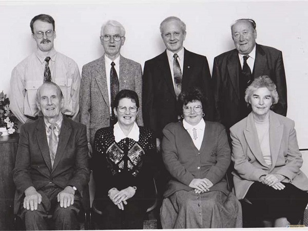
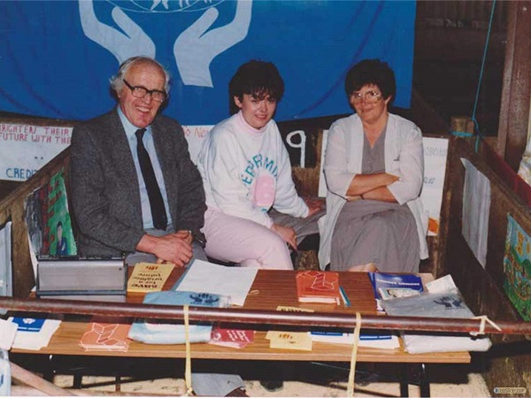
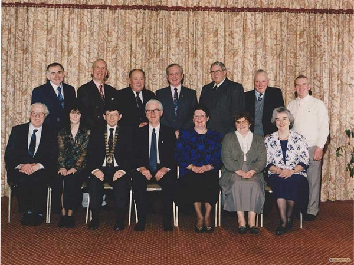
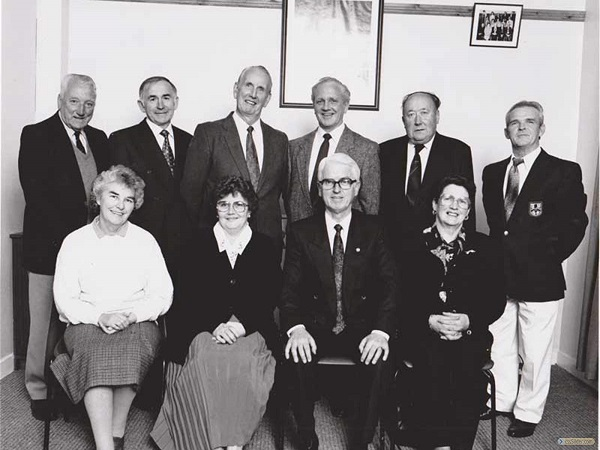
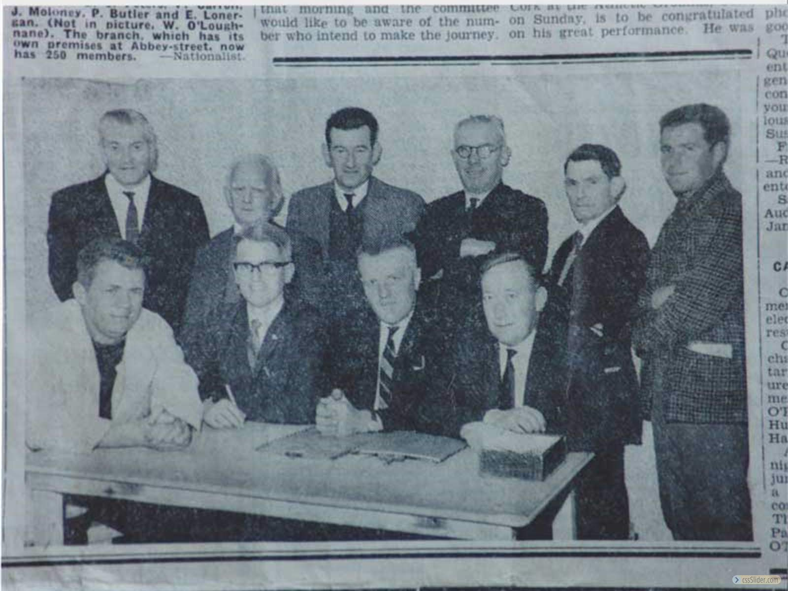
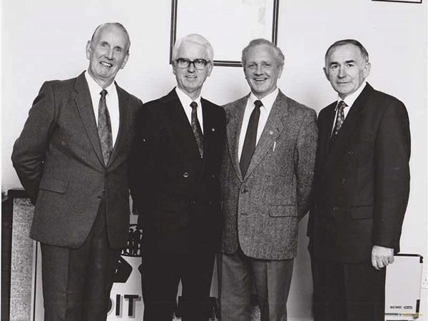

A Short History of Cahir Credit Union
The idea of a Credit Union in Cahir was first mentioned after a Muintir na Tire meeting in October 1968. The first discussion took place in Dan Conway's home (Claire Whelan's grand-father) in Barnora. In November a meeting was held in the Vocational School and it was addressed by Peter Mongey and Liam Stapelton of Cashel Credit Union. Following this a further meeting was held to discuss the formation of a Study Group.
The leaders of the Study Group were all members of Muintir na Tire and the Study Group meetings were held in the old Vocational School ('the Tech') on Monday nights. Paddy Lonergan presided and there was about forty people involved. The Study Group leaders were as follows: Paddy Lonergan, Jackie Costello, Paddy Finnerty, Benny Peters, Paddy Butler (No. 1 Account), Donal Burke, Ronnie Beardmore, Senator Pierce Butler, Jackie Moloney, Pierce Carroll, Billy Loughnane, Pat Joe Regan, Dan Conway, Ned Lonergan and Ned O' Brien. From this it was decided to contact the Head Office of the Irish League of Credit Unions and the first league official to address the group was Pat Fay.
Further advice and encouragement was given from Bill O' Brien and Paddy Harte who were leading members of Clonmel Credit Union. In February 1969 and application was made under Clonmel Credit Union sponsorship and the inaugural meeting was held in 'the Tech' in late February.
The first officers elected were:
- Paddy Lonergan (Chairman)
- Ronnie H. Beardmore (Secretary)
- Jackie Costello (Treasurer)
- Jackie Moloney (Director)
- Paddy Butler (Director)
- Paddy Finnerty (Director)
- Billy Loughnane (Director)
- Benny Peters (Director)
- Pierce Carroll (Director)
- Donal Burke (Director)
- Ned Lonergan (Director)
In its initial stages, Cahir Credit Union worked out of 'the Tech'. The first loan was granted soon after this, for ten old pounds (after a lot of soul-searching by the Credit Committee!).
In April of 1969 a premises was purchased in Abbey Street and we worked from there for many years. In the early years all records were handwritten and we did not even have an adding machine. We used the '3 in 1' system which entailed Cards, Collection Sheet and Nominal Ledger all hand written. In 1982 an Accounting Machine System was introduced, which greatly increased efficiency.
Even in its early years Cahir Credit Union took a big interest in Chapter activities and joined Chapter 10. It was a great honour when in 1975 Paddy Lonergan was elected Vice-Chairman and two years later was elected as Chairman. Paddy Lonergan was a very big part of Chapter 10 for many years and served in all senior offices over the years. At League level he served on the Nominating Committee on several occasions.
Growth in membership and share capital was spectacular; by 1986 we reached the half a million mark and by 1990 we reached the million. 1988 saw another big milestone, our 1,000th member!
In 1989 a suitable premises in the Square came on the market and the Board proceeded and purchased it. This premises was renovated and officially opened for business. In the same year, a sign of success of Cahir Credit Union, was the appointment of the first manager, Mr Paddy Lonergan. He was assisted at that time by one other part-time staff member, Mrs Eileen Hyland. A new computerised system for Members was also introduced at this time.
Paddy retired as Manager in 1996 and was succeeded by Denis Hartnett, our current Manager. Paddy continued his involvement in Cahir Credit Union in a voluntary capacity until he passed away in 2006. Due to the increased volume of business additional staff were recruited and Claire Whelan was appointed as Assistant Manager in 1993.
The current purpose built offices in St. Mary's Rd., Cahir were constructed in 2002/2003 and with the addition of an updated Computer System it provides our Members and Staff with an efficient and comfortable environment for the new millennium.
In 2014 we reached another big milestone: our 10,000 membership!
Cahir Credit Union currently employs 11 people, with a mixture full-time and part-time staff, and offers a great range of services to the members.
We are grateful to the vision and commitment of the founding Volunteers and Members whose hard work helped lay the foundation of the successful Credit Union that exists in Cahir today.
Gallery
 Back Row L to R Cyril OBrien, John J Costello,Alec Quinn, RH Beardmore, Front Row Lto R Ned O Brien, Stella Ryan, Eileen Quirke, Peg Butler
 Patrick Lonergan, Claire Whelan, Eileen Quirke
 25th Anniversary Gathering -- Back Row L to R John Mackey, Ed O Brien, RH Beardmore, Alec Quinn, Jim Harden, John Condon, Tommy Cotter, Front Row L to R Paddy Lonergan, Margaret O Dwyer, (President ILCU) John J Costello, Stella Ryan, Eileen Quirke, Peg Butler.
 Back Row L to R John Condon, John Mackey, Ed O Brien, Alec Quinn, RH Beardmore, Tommy Cotter Front Row L to R Peg Butler, Eileen Quirke, John J Costello, Stella Ryan
 First Meeting -- Back Row LtoR Paddy Finnerty, John J Brooks, Pierce Carroll, Jackie Moloney, Paddy Butler, Ed Lonergan Front Row LtoR Donal Burke John J Costello Paddy Lonergan, RH Beardmore
 Ed O’Brien, John J Costello, Alec Quinn, John Mackey